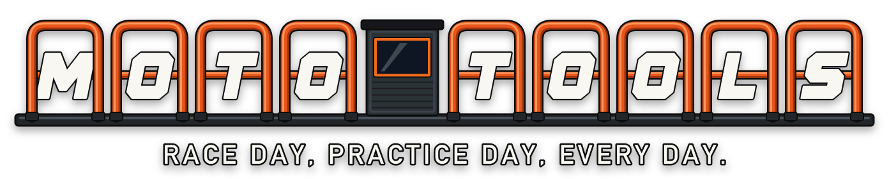

Every lap. Every turn. Every jump. And whether it got better since last week.
A small GPS box on the bike records every moto. Afterwards you see exactly what happened on the track, measured, not guessed.

Laps and turns
Lap times, plus the speed coming out of every turn, on a map of the track.
Top speed and jumps
How fast on the straights and how far on the jumps, lap after lap.
Week to week
The same turns on the same track, timed the same way every night, so you can see which corners got quicker and which didn't.
One thing to work on
Not a wall of numbers. The turn worth practicing next, and next week's proof.
Built for moto families
Parents
See what happened out there without standing at every corner with a stopwatch.
Trainers
Each rider's sections side by side, and a clear picture of who's improving where.
Riders
Beat your own best turn. Points and a game of your home track are on the way.
Now testing with a few riders
We're running Moto Tools with a small group of riders this season. Want in, or run a track or training program? Send us a message.
Message @mototoolsmx